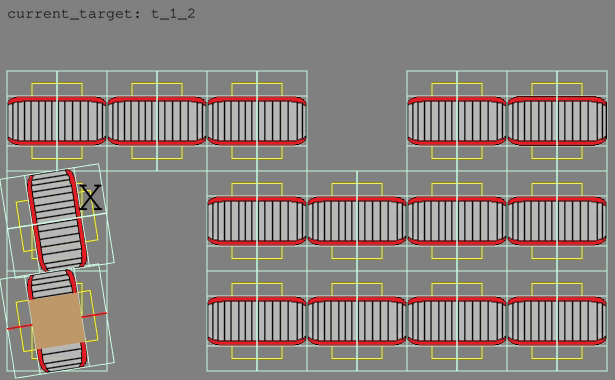

Python-based Emulation for Developing Material Flow Controls in C
Running C code as part of a Python simulation using CFFI
 Fischertechnik turntable modules
Fischertechnik turntable modules
Back at university we had a great time playing around with miniaturized
Fischertechnik conveying systems.
We learned about the challenges of PLC programming and the joy of using
Arduino micro-controller boards to bring conveyor belts and turntables to life.
We were learning about simulation-based controls testing using
Emulate3D (awesome 3D physics engine, robot emulations) and
Plant Simulation (also great for testing higher-level controls).
However, the restrictive licensing - USB dongles and notoriously limited pool-licenses - made it challenging to create a simple and accessible controls development workflow suitable for all project team members.
Let’s sketch the idea of a material flow simulation environment for developing, debugging and testing C-code inside a Python-based simulation model - non-proprietary and ready to be run anywhere, e.g. as part of CI.
Public repo: https://github.com/fladdimir/material-flow-control-c-emulation
1. Scenario & Scope
The “turntable” (image above) represents a typical Fischertechnik conveying module. It consists of 2 motors and 3 sensors:
- conveyor belt (motor 1)
- proximity sensor or photoelectric barrier to identify whether some item is present on the module (sensor 1)
- turning unit for changing the belt rotation by 90 degrees (motor 2)
- stop position sensors for checking whether the module fully rotated (sensors 2+3, both at 0 and 90 degrees)
Even though the motors typically require 24V, relays can be used to control a module with a micro-controller boards typically working at 3-5V pin voltage. Micro-controller boards such as Arduinos also offer further options for interfacing with other systems via serial communication.
Putting together multiple turntable modules, grid-like conveying layouts can be realized.
However, writing control logic for Arduino can be challenging, especially since debugging code running on a connected board is not as simple. Additionally, central material flow control software also needs to be tested in interaction with module controls.
2. System Structure
A structure for controlling the flow of goods through a grid of connected turntable modules could look like this:
- every turntable’s sensors and actors are controlled by a micro-controller (I/O)
- every micro-controller has a serial connection to communicate with a central material flow control server
- the server logic consists of different parts dedicated to communicating with connected modules, as well as central functions e.g. for pathfinding/routing of items through the system
While systems such as Flexconveyor claim to work in a decentralized way without the need for a central “routing brain”, the described structure tries to shift all functions without hard real-time requirements from the micro-controllers to a central server (which makes particular sense when running on low-budget, resource-constrained boards such as the Arduino Uno).
3. Emulation Interfaces
Within the described setup, every micro-controller interacts with its environment via sensor-reads, actor-writes, and byte-wise serial-reads/writes. To be able to run the control logic on a development computer, the actual hardware-dependent read/write calls need to be replaced by interactions with simulated counterparts.
One way of achieving that using a Python-based emulation environment and exploiting the simple interfacing with C code could look like this:
- module control C code is called from a Python runtime with help of a generated CFFI wrapper
- device-dependent interaction methods are setup to call corresponding Python functions providing simulated inputs/outputs
- sensor-reads & actor-writes are run against a shared memory, which is also read/written by a simulation of the physical modules
- serial reads & writes are going to a pipe, which represents a connection to the server-side module agent
- a dedicated sub-process is created for every module control so that no global C variables are shared between different module controls
CFFI allows for the simple creation of functions which are declared in C and called from Python, as well as the other way around. When generating the CFFI wrapper code, C header files can be used to prepare C functions to be called from Python. To be able to implement forward-declared C functions in Python, the follwing definition can be set:
extern "Python+C" bool _light_barrier(); // provide info whether sensor is triggered
This way, an implementing Python function can then be wired:
@ffi.def_extern()
def _light_barrier() -> bool:
return shared_array[LIGHT_BARRIER_IDX] # simulated value from memory instead of actual sensor
4. 2D-Simulation
To be able to emulate physical interactions of the module control code, real system components need to be simulated. While there are Python wrappers for awesome (3D) physics engines such as chrono, this implementation just uses a minimal 2D engine with very limited physics.
Supported features include:
- nested element structures in 2D
- cheap collision//overlap detection for certain combinations of simple geometries (rectangles, straights, points)
- relative transition and rotation movements of elements and child-elements
- movement limits (e.g. to realize max. 90 degrees of rotation for turntables)
While an elements global position is determined by its local position relative to the parent-element it is attached to, the global position is cached to avoid recalculation for nested objects in case no position changes occured for any parent element.
The collision detection uses a simple 2-phase check, first checking cheap circumcycles to identify potentially colliding objects before performing a more expensive cohen-sutherland evaluation.
Collisions are used in the simulation e.g. to identify when a box is hitting a light barrier, or which conveyor belt movements are changing a box’s position.
5. Putting it all together
The screencast shows an animation of a small sample test scenario consisting of several modules forwarding one box towards randomly chosen target modules (indicated by ‘X’):

The visualization is created with help of the Arcade game engine, which allows to simply step forward the simulation inside the game loop and animate the current state. In addition to the advent of the simulated time, the (C-coded) control loop of each module is invoked sequentially to allow a reaction to potential sensor state changes.
On the server-side of the control hierarchy, the forwarding/receiving of boxes between modules and the awaiting of modules to reach readiness is realized using asyncio coroutines.
The determination of which modules to visit in order to reach a distant target module is done with help of
networkx and a corresponding graph constructed from the module locations.
The cool thing about all this: we can debug every single layer of the control code at any point in time!
In addition to normal Python debugging (part of the VS Code Python extension) of the server-side control code, we can attach a C (gcc) debugger to any of the module sub-processes running the C code.
This also works great from within VS Code, where we can even run different debugging sessions at the same time.
Being able to “look inside” the current state of a C module control makes it amazingly easy to discover bugs, such as the bad evaluation of commands received via serial communication, confirmation serial writes at bad times, plain wrong if-conditions, misplaced early returns etc..
As animation is fully optional, running a “headless” simulation can be easily used for validating checked-in control code agains a set of defined test scenarios / module layouts e.g. as part of a CI pipeline.
Limits and Shortcomings
Despite the good level of support for development and debugging, there are serious shortcomings of the presented approach, so that there still remains the need for properly testing the complete physical system:
- C code is run on a normal PC instead of a resource-constrained micro-controller, so e.g. memory usage should be carefully checked
- the defined “hardware abstraction layer” hides the complexity of actual communication hardware and technologies (pins/bus systems/rxtx/i2c/…)
- all control code is invoked sequentially and the simulation waits for all control loops to finish before the next time step, so real-time requirements should be checked with special care on the target hardware